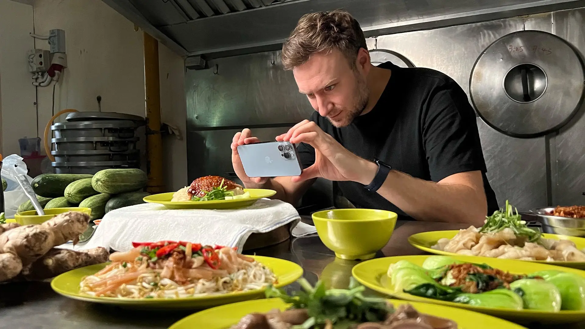
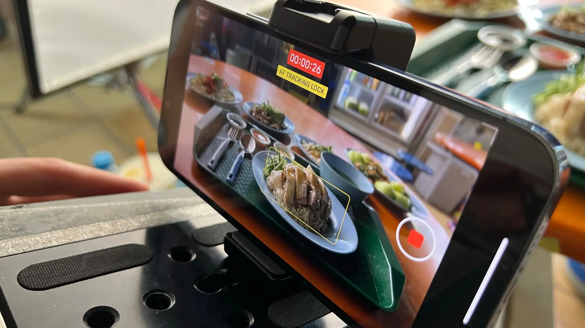
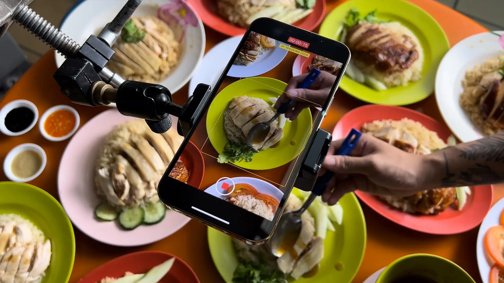
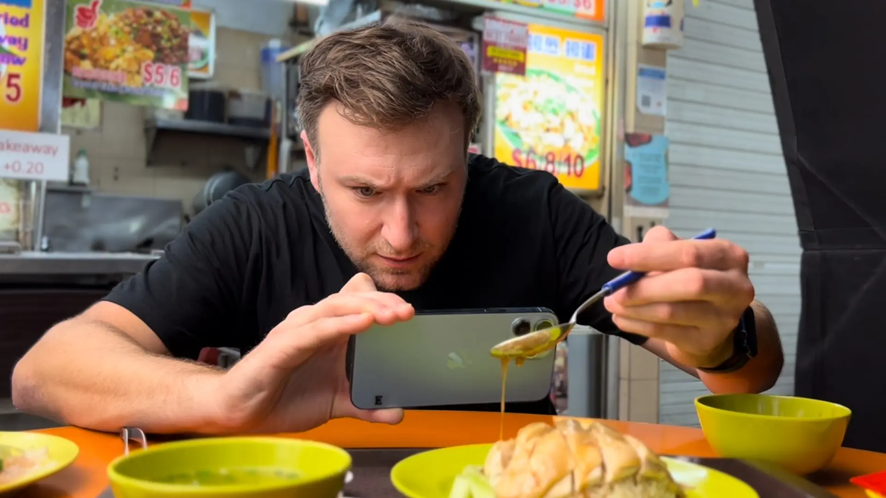
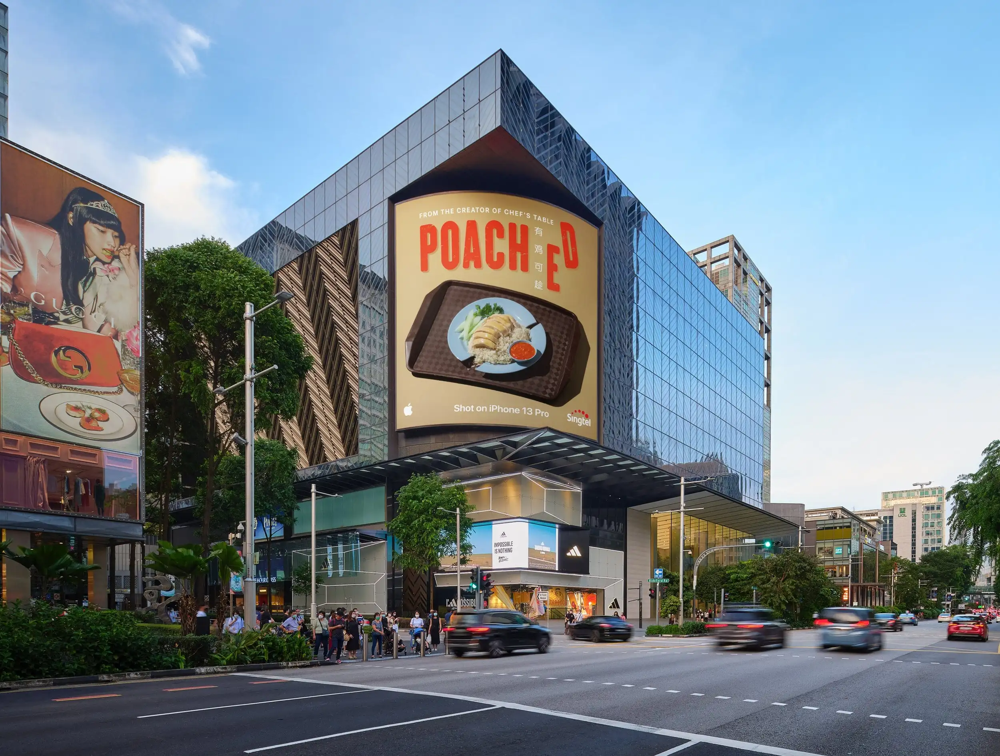
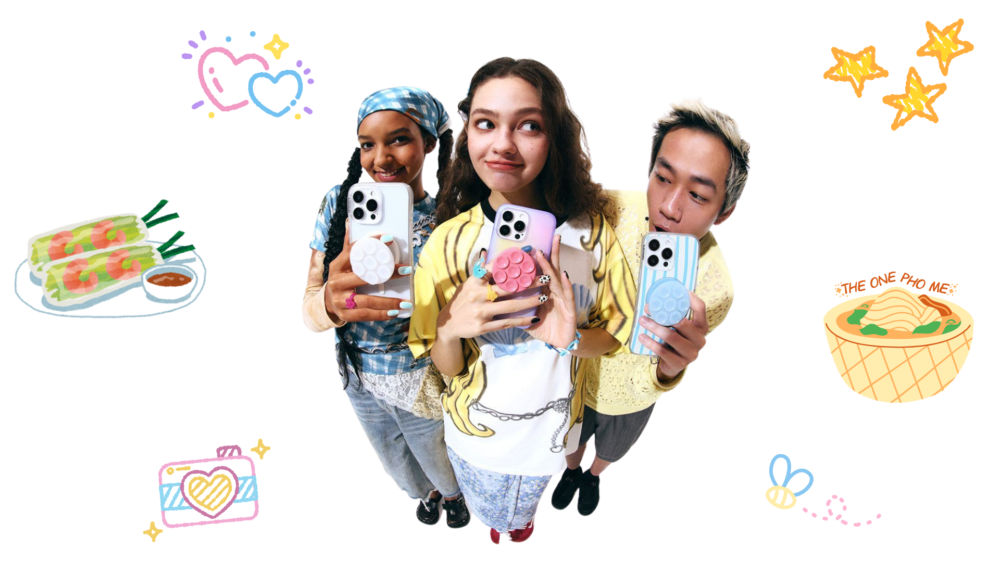
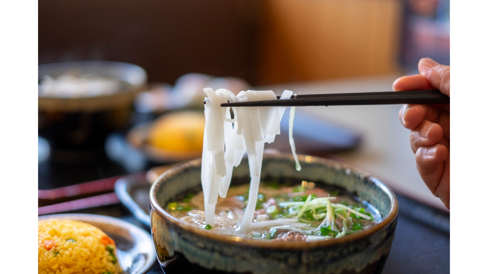

Apple
Poached
Singapore's chicken rice war, documented on iPhone.
Big ambitions clash in tiny kitchens, all in the name of Singapore's beloved local dish — chicken rice.
To celebrate Singapore's UNESCO Heritage hawker culture, we enlisted the creator of Chef's Table and director of Jiro Dreams of Sushi, David Gelb, to tell the story of Poached 有鸡可趁, a dramatic tale of the ongoing war between two hawker chefs as they compete for the perfect recipe.
iPhone, the behind-the-scenes hero.
Shot in the hot, cramped kitchens of open-air food courts known as hawker centers in Singapore, we showcased iPhone 13 Pro camera features, such as Cinematic mode, macro and time-lapse.





Apple
Simmered
Hanoi's legendary Pho broth lineage, captured on iPhone.
A 24-hour slow burn. Two generations of family recipe secrets, boiling down to one legendary bowl.
To celebrate Vietnam's rich culinary legacy, we captured the artistry of traditional Hanoi Pho broth. From the delicate selection of star anise to the endless simmering of marrow bones, every micro-detail is shot using Cinematic and Macro modes, revealing the warmth and steam of Hanoi's early morning alleys.

Capturing the steam in Hanoi's cold breeze.
We brought the iPhone 13 Pro camera into the narrowest wet alleys of Hanoi's Old Quarter, pushing the limits of Cinematic mode in low light, capturing raw steam rising at 4:00 AM.
